I used the tool from last year's student to generate the corresponding keypoints on the two images. The picture on the left is me, and the one on the right is from the FEI Face Database.
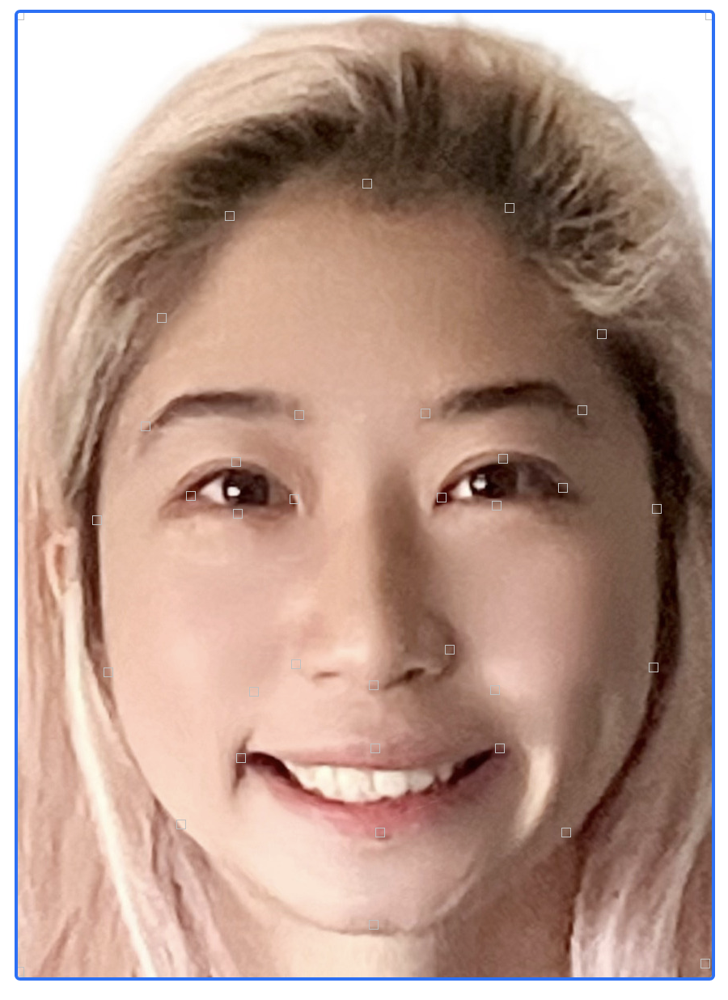 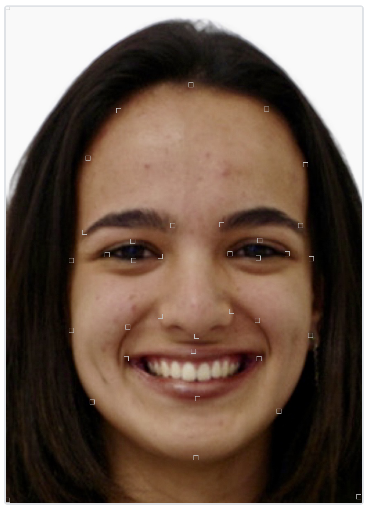To compute the triangulation, I first found the average of the keypoints of the two images. Then, I used scipy.spatial.Delaunay on the average points for the calculation.
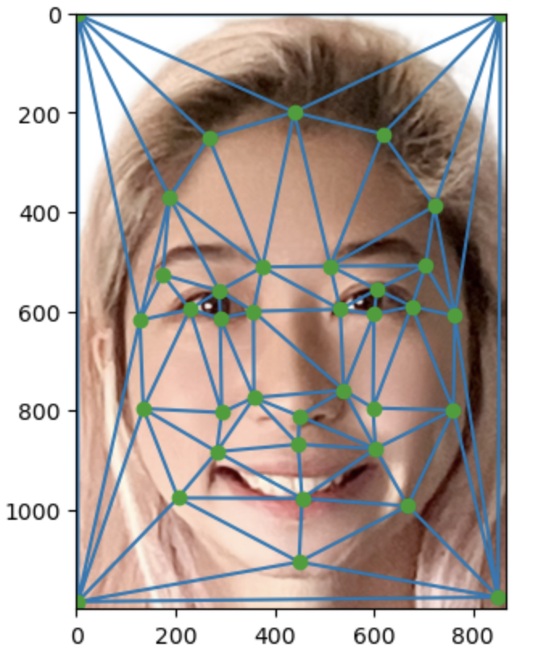 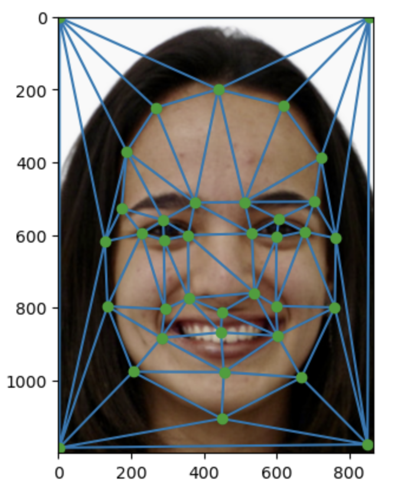First, I defined a function that calculated the affine transformation matrix, which could transform one image's shape to the average shape.
Then, I wrote a warp function that used this computeAffine function. It created a triangle mask based on the average triangle points. Then, I found the source image's triangle shape by using the inverse of the affine transformation matrix. Next, I used scipy.interpolate.griddata to interpolate the color.
Eventually, I iterated through each triangle, got the 2 warped images, and averaged them in order to get the mid-way face.
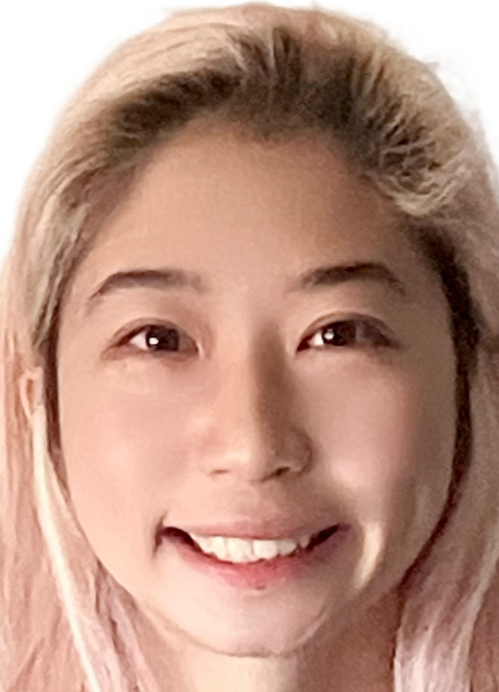 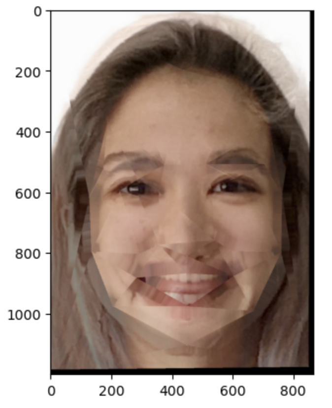 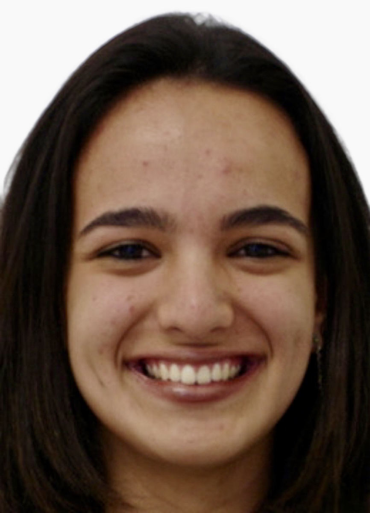I added two parameters, warp_frac and dissolve_frac, to make a morph gif. I set the range for each parameter to be [0,1] with a step size of 0.02, so there were a total of 50 frames. The process was similar to the mid-way face, but instead of averaging, some weights were used.

I used the frontalimages_spatiallynormalized images and the annotated shapes from FEI Face Database. I iterated through each image and each triangle and then averaged them to find the mean face.
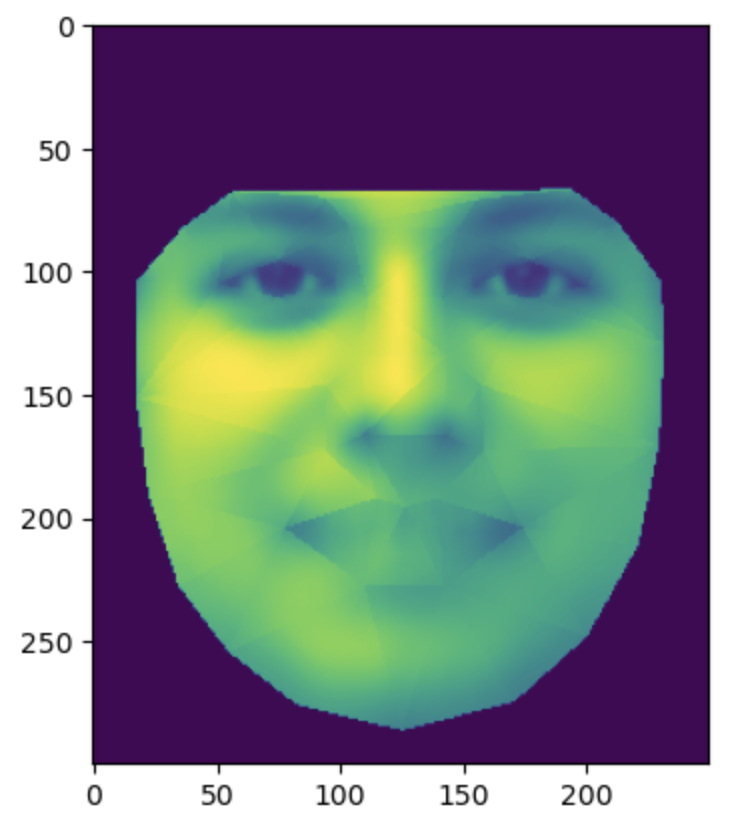Here are some images from the dataset warped into the average shape.
 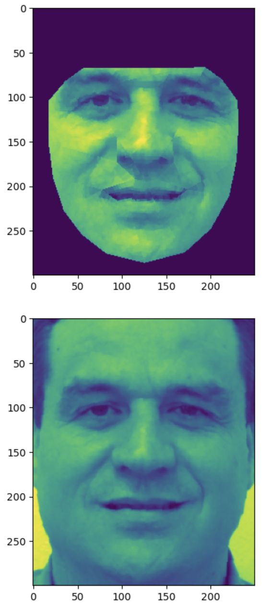
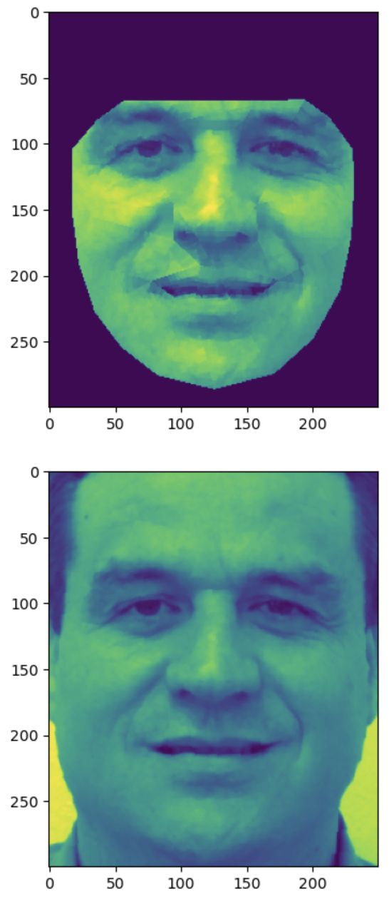

top: warped image; bottom: original image
Then, I changed my image to gray-scale and resized and cropped it to match the dataset images. I also found the corresponding keypoints on my face again. Below are my face warped into the average geometry, and the average face warped into my geometry.
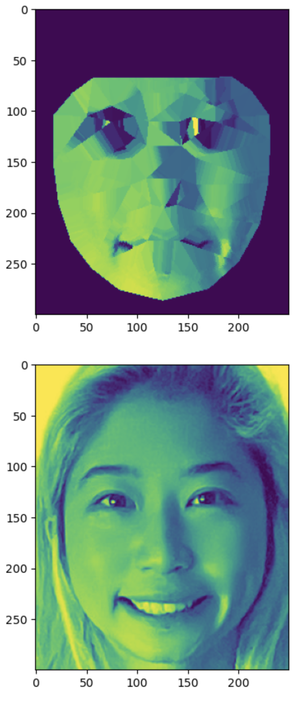 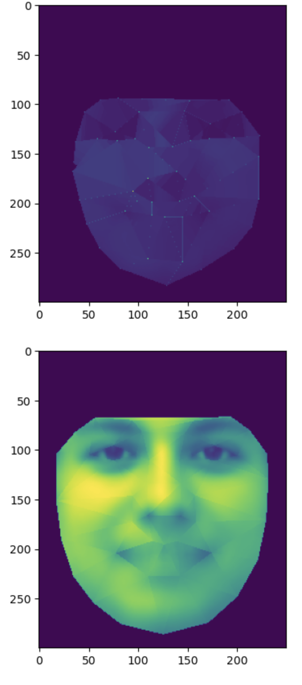I used the morph function defined before and set the parameters, warp_frac and dissolve_frac, to be 0.8 and 0.5.
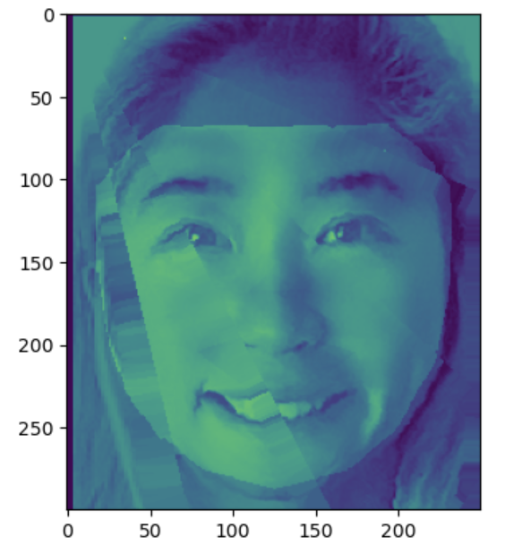I tried to change the gender of my image. I downloaded the average asian male face from the website and resized and cropped it to match my image.
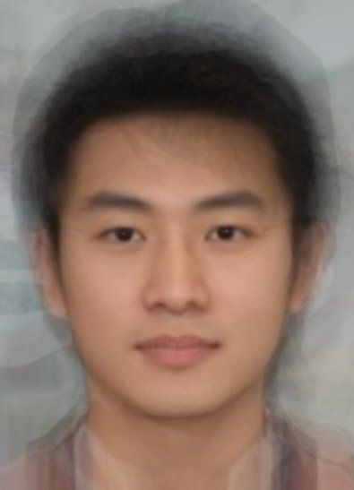Below are the results for morphing just the shape, just the appearance, and both.
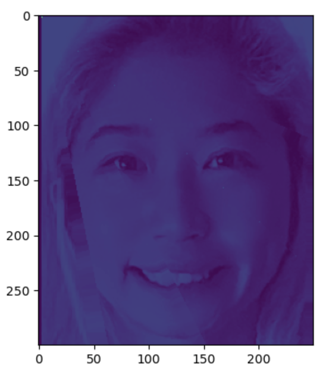 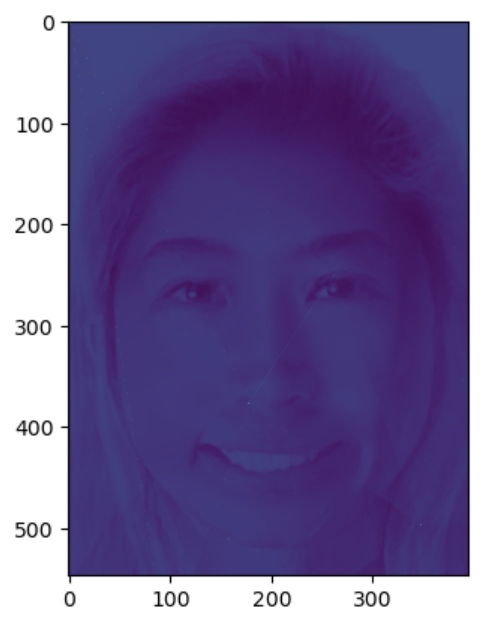 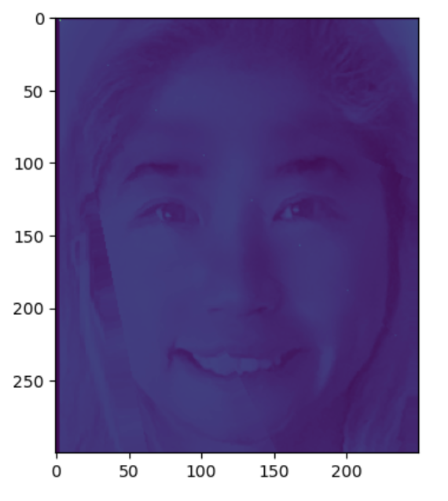